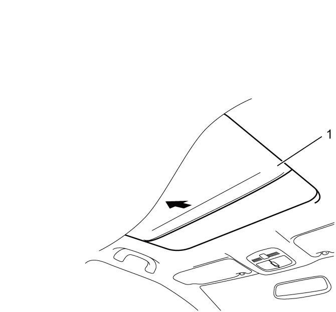
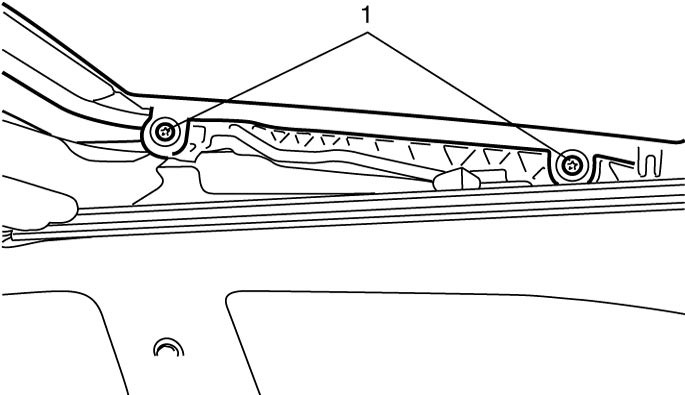
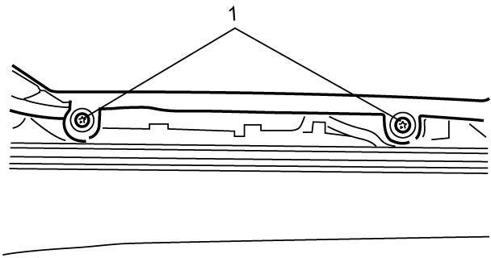

9I
| Sun Roof Glass Removal and Installation |
Removal
1)Open sunshade (1) fully and tilt up sun roof.


 "Expand image")
2)Disconnect negative (–) cable at battery.
3)Remove front sun roof glass by removing glass fixing bolts (TORX® T25) (1).

 "Expand image")
4)Remove rear sun roof glass by removing glass fixing bolts (TORX® T25) (1).

 "Expand image")
Installation
Reverse removal procedure noting the following points.
•Initialize sun roof motors. 
•Adjust sun roof glass mounting position.
•Adjust sun roof glass mounting position.